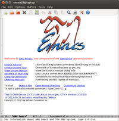

Emacs
Dieser Artikel wurde für die folgenden Ubuntu-Versionen getestet:
Dieser Artikel ist größtenteils für alle Ubuntu-Versionen gültig.
Artikel für fortgeschrittene Anwender
Dieser Artikel erfordert mehr Erfahrung im Umgang mit Linux und ist daher nur für fortgeschrittene Benutzer gedacht.
Zum Verständnis dieses Artikels sind folgende Seiten hilfreich:
Emacs ist ein sehr umfangreicher und mächtiger plattformunabhängiger Editor, der durch Plugins erweiterbar ist. Da seine Steuerung hauptsächlich auf Tastenkombinationen basiert, bedarf es einiger Einarbeitung, um alle seine Möglichkeiten intensiv nutzen zu können.
Installation¶
Das Programm ist nach der Installation des folgenden Pakets [1] verfügbar:
emacs
 mit apturl
mit apturl
Paketliste zum Kopieren:
sudo apt-get install emacs
sudo aptitude install emacs
Bei Ubuntu 12.04 erhält man Version 23, bei Ubuntu 14.04 Version 24. Wenn man Emacs ausschließlich über die Konsole verwendet (Systeme ohne grafische Oberfläche), kann man auch das folgende Paket installieren:
emacs24-nox
mit apturl
Paketliste zum Kopieren:
sudo apt-get install emacs24-nox
sudo aptitude install emacs24-nox
Falls eine ältere Version bevorzugt wird, sind die Pakete emacs23 bzw. emacs23-nox interessant.
PPA¶
Für die Version 24 von Emacs sind Snapshots für Ubuntu 12.04 verfügbar (für Ubuntu 14.04 nicht relevant, da bereits in den offiziellen Paketquellen enthalten). Diese können aus einem "Personal Packages Archiv" (PPA) [2] installiert werden. Auch wenn diese Snapshots als sehr stabil gelten, handelt es sich dennoch um Testversionen.
Adresszeile zum Hinzufügen des PPAs:
ppa:cassou/emacs
Hinweis!
Zusätzliche Fremdquellen können das System gefährden.
Ein PPA unterstützt nicht zwangsläufig alle Ubuntu-Versionen. Weitere Informationen sind der  PPA-Beschreibung des Eigentümers/Teams cassou zu entnehmen.
PPA-Beschreibung des Eigentümers/Teams cassou zu entnehmen.
Damit Pakete aus dem PPA genutzt werden können, müssen die Paketquellen neu eingelesen werden.
Nach dem Aktualisieren der Paketquellen kann man das folgende Paket installieren [1]:
emacs-snapshot (ppa)
mit apturl
Paketliste zum Kopieren:
sudo apt-get install emacs-snapshot
sudo aptitude install emacs-snapshot
Arbeit mit Emacs¶
Start¶
Emacs ist bei Ubuntu-Varianten mit einem Anwendungsmenü entweder unter "Anwendungen -> Entwicklung -> GNU Emacs" und/oder unter "Anwendungen -> Zubehör -> GNU Emacs" zu finden. Man kann den Editor aber auch in der Konsole [3] durch
emacs --no-window-system
starten.
Weitere Emacs-Startparameter sind:
--fullscreen(kurz:-fs; Fullscreen)--fullheight(kurz:-fh; maximale Fensterhöhe)

Tutorial¶
Für Einsteiger bringt der Emacs ein eingebautes Tutorial mit. In diesem werden die wichtigsten Tastenkombinationen erklärt und am Hilfetext ausprobiert. Die Durcharbeitung ist sehr zu empfehlen und führt auch in das Konzept der Buffer und Modi ein. Das Tutorial ruft man in Emacs auf mit "Help" - "Emacs Tutorial" oder über die Tastenkombination Strg + H , T .
Steuerung¶
Die grundlegenden Steuerbefehle sind:
| Datei öffnen | Strg + X , Strg + F |
| Datei speichern | Strg + X , Strg + S |
| Emacs Beenden | Strg + X , Strg + C |
| Vorwärtssuche nach einer Zeichenkette | Strg + S |
| Rückwärtssuche nach einer Zeichenkette | Strg + R |
| Zum Beginn der Zeile springen | Strg + A |
| Zum Ende der Zeile springen | Strg + E |
| Ein Zeichen löschen | Strg + D |
| Ein Wort löschen | Alt + D |
| Aktion rückgängig machen | Strg + X , U |
Um die Tastenkombinationen zur Steuerung des Editors gut im Blick zu haben, kann man sich auch eine Referenzkarte 
 im PDF-Format ausdrucken. Nach der Installation von Emacs findet sich eine aktuelle Version der Referenzkarte im Verzeichnis /usr/share/emacs/VERSION/etc/refcards/.
im PDF-Format ausdrucken. Nach der Installation von Emacs findet sich eine aktuelle Version der Referenzkarte im Verzeichnis /usr/share/emacs/VERSION/etc/refcards/.
Drucken¶
Falls Emacs nicht druckt, kann man der Variablen 'printer-name' den Druckernamen (z.B. 'FS-1030D') zuweisen: Strg + H V "printer-name".
Start-Screen ausschalten¶
Wenn der Start-Screen stört, dann kann man ihn mit
(custom-set-variables ;; custom-set-variables was added by Custom. ;; If you edit it by hand, you could mess it up, so be careful. ;; Your init file should contain only one such instance. ;; If there is more than one, they won't work right. '(inhibit-startup-screen t)) (custom-set-faces ;; custom-set-faces was added by Custom. ;; If you edit it by hand, you could mess it up, so be careful. ;; Your init file should contain only one such instance. ;; If there is more than one, they won't work right. )
in ~/.emacs abschalten.
Emacs-Plugins¶
AUCTeX¶
Freunde des Emacs finden mit AUCTeX  genau das Richtige, wenn es um LaTeX-Programmierung geht. AUCTeX ist eine sehr leistungsfähige Erweiterung die eine komfortable Erstellung und Ansicht von LaTeX- und TeX-Dateien ermöglicht. Mit Hilfe der Erweiterung preview-latex werden bereits im Editor die mit LaTeX-gesetzten Formeln, Bilder und andere grafische Elemente angezeigt. Eine Referenzkarte (PDF) ist ebenfalls vorhanden. Zu den umfangreichen Möglichkeiten von AUCTeX gehören:
genau das Richtige, wenn es um LaTeX-Programmierung geht. AUCTeX ist eine sehr leistungsfähige Erweiterung die eine komfortable Erstellung und Ansicht von LaTeX- und TeX-Dateien ermöglicht. Mit Hilfe der Erweiterung preview-latex werden bereits im Editor die mit LaTeX-gesetzten Formeln, Bilder und andere grafische Elemente angezeigt. Eine Referenzkarte (PDF) ist ebenfalls vorhanden. Zu den umfangreichen Möglichkeiten von AUCTeX gehören:
Editieren:
Einfügen von Makros, Umgebungen und Überschriften mit einer einfachen Tastenkombination oder mit einem Menübefehl. Bei dem Einfügen von LaTeX-Kommandos können diese ebenfalls mit Hilfe der Tabulatortaste vervollständigt werden. Bei bekannten Makros werden auch Informationen abgefragt.
Einfügen von Mathematik-Makros mit einfachen Tastenkombinationen oder mit einem Menübefehl.
Ausgeklügelte Darstellung von Befehlen mit Einfluss auf die Schrift (Überschriften, Schriftgrößen, Fettdruck, ...) sowie Einrückung von Makros und Umgebungen.
Falten von Makros und Umgebungen.
Verwaltung von Referenzen, Literaturverzeichniseinträge und Labels mit Hilfe des integrierten RefTeX
.
Kompilieren
Starten verschiedener TeX/LaTeX Interpreter und benötigter Hilfsprogramme wie BiBTeX und makeindex innerhalb von Emacs.
Anzeigen von Fehlermeldungen beim Kompilieren, dabei wird sogar zu der entsprechenden Stelle im TeX/LaTeX Quellcode gesprungen.
Anzeigen
Starten von Anzeigeprogrammen für erzeugte DVI, PostScript und PDF Dateien.
Die Erweiterungen können ebenfalls aus den Ubuntu-Quellen installiert [1] werden. Die Pakete für AucTeX und preview-latex heißen:
auctex
preview-latex
mit apturl
Paketliste zum Kopieren:
sudo apt-get install auctex preview-latex
sudo aptitude install auctex preview-latex
Zur Aktivierung von AUCTex muss die Konfigurationsdatei ~/.emacs um die folgenden Einträge ergänzt werden:
;;; Anpassungen für AUCTeX
(load "auctex.el" nil t t)
(load "preview-latex.el" nil t t)
(require 'tex-site)
;;; Anpassungen für RefTeX
(require 'reftex)
(add-hook 'LaTeX-mode-hook 'turn-on-reftex)
(add-hook 'latex-mode-hook 'turn-on-reftex)
(setq reftex-plug-into-AUCTeX t)
(setq reftex-external-file-finders
'(("tex" . "kpsewhich -format=.tex %f")
("bib" . "kpsewhich -format=.bib %f")))Wer eine Ausgabe als PDF möchte, kann zusätzlich
(setq TeX-PDF-mode t)
ergänzen. Dann wird standardmäßig eine PDF erzeugt.
Ausführlich ist die Konfiguration von Emacs, AUCTeX, RefTeX und Rechtschreibprüfung in diesem PDF-Dokument beschrieben.
Org-Mode¶
Ein weitere Erweiterung für Emacs ist Org-Mode . Die Stärken der Erweiterung ist das Aufnehmen und Verwalten von Notizen, ToDo-Listen, Projektplanung und Erstellung von Webseiten und PDF-Dateien. Org-Mode ist sehr flexibel einsetzbar und stark dokumentiert. Es wird auch häufig für Zeitmanagement (z.B. Getting Things Done) verwendet. Eine Referenzkarte ist ebenfalls verfügbar. Die Erweiterung kann aus den Ubuntu-Quellen installiert [1] werden. Der Paketname lautet:
org-mode
mit apturl
Paketliste zum Kopieren:
sudo apt-get install org-mode
sudo aptitude install org-mode
ECB¶
ECB (Emacs Code Browser) ist eine Erweiterung für XEmacs und Emacs, die einen graphischen Dateibrowser enthält. Für eine genaue Beschreibung, siehe http://ecb.sourceforge.net/.
Die Erweiterung kann aus den Ubuntu-Quellen installiert [1] werden. Der Paketname lautet:
ecb
mit apturl
Paketliste zum Kopieren:
sudo apt-get install ecb
sudo aptitude install ecb
ECB kann in Emacs mit dem Befehl M + x ecb-activate gestartet werden. Alternativ kann man seine Konfigurationsdatei ~/.emacs um den folgenden Eintrag ergänzen:
(ecb-activate)
Beim ersten Start kommt ein Hinweis, dass bestimmte Daten in der Konfigurationsdatei gespeichert werden müssen. Dies erledigt ECB automatisch. Dazu einfach auf save bzw. speichern klicken.
Um mit einem anderen Layout von ECB zu starten, muss man die Konfigurationsdatei nochmals ergänzen ("left14" durch das gewünschte Layout ersetzen):
(setq ecb-layout-name "left14")
Hierbei allerdings darauf achten, dass diese Zeile vor (ecb-activate) steht.
Zeilen verschieben¶
Mit folgender Ergänzung in der Konfigurationsdatei ~/emacs, ist es möglich, entweder die aktuelle Zeile mit Hilfe von M + PFEILTASTE hoch/runter zu verschieben oder den gesamten markierten Text:
(defun move-text-internal (arg)
(cond
((and mark-active transient-mark-mode)
(if (> (point) (mark))
(exchange-point-and-mark))
(let ((column (current-column))
(text (delete-and-extract-region (point) (mark))))
(forward-line arg)
(move-to-column column t)
(set-mark (point))
(insert text)
(exchange-point-and-mark)
(setq deactivate-mark nil)))
(t
(let ((column (current-column)))
(beginning-of-line)
(when (or (> arg 0) (not (bobp)))
(forward-line)
(when (or (< arg 0) (not (eobp)))
(transpose-lines arg))
(forward-line -1))
(move-to-column column t)))))
(defun move-text-down (arg)
"Move region (transient-mark-mode active) or current line
arg lines down."
(interactive "*p")
(move-text-internal arg))
(defun move-text-up (arg)
"Move region (transient-mark-mode active) or current line
arg lines up."
(interactive "*p")
(move-text-internal (- arg)))
(provide 'move-text)
(global-set-key [M-up] 'move-text-up)
(global-set-key [M-down] 'move-text-down)Die Vorlage wurde entnommen von http://www.emacswiki.org/emacs/MoveText.
Links¶
Emacs Wiki
 und andere Sprachen
und andere SprachenEmacs Lisp List
- Liste der ErweiterungenEvil Mode: Or, How I Learned to Stop Worrying and Love Emacs
- Erstellt mit Inyoka
-
 2004 – 2017 ubuntuusers.de • Einige Rechte vorbehalten
2004 – 2017 ubuntuusers.de • Einige Rechte vorbehalten
Lizenz • Kontakt • Datenschutz • Impressum • Serverstatus -
Serverhousing gespendet von